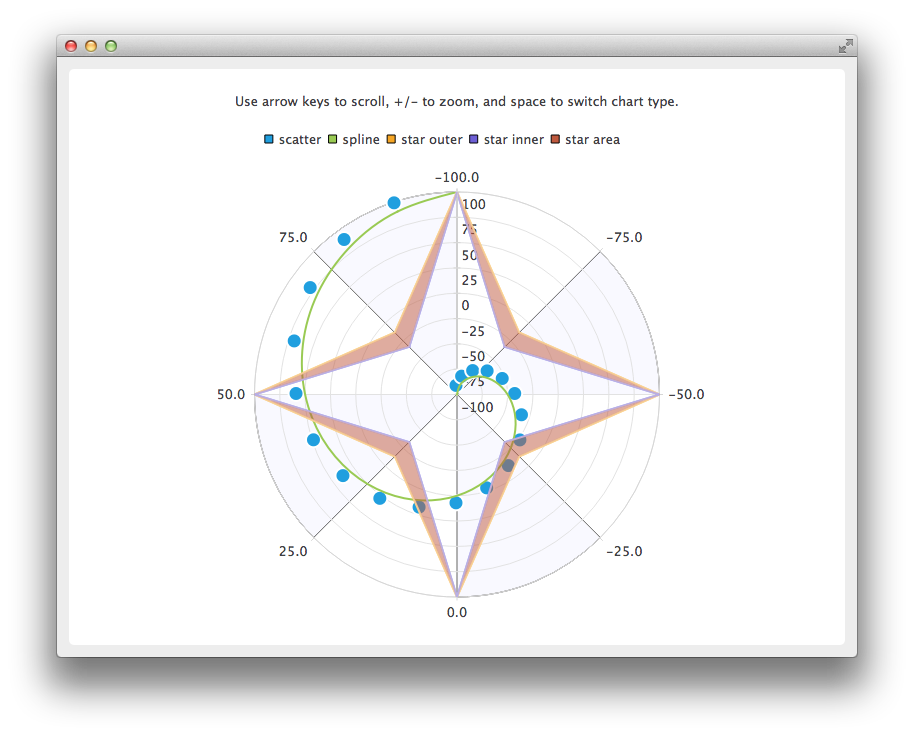

QPolarChart Class
The QPolarChart presents data in polar charts. More...
| Header: | #include <QPolarChart> |
| Inherits: | QChart |
Public Types
| enum | PolarOrientation { PolarOrientationRadial, PolarOrientationAngular } |
| flags | PolarOrientations |
Public Functions
| QPolarChart(QGraphicsItem *parent = nullptr, Qt::WindowFlags wFlags = Qt::WindowFlags()) | |
| virtual | ~QPolarChart() |
| void | addAxis(QAbstractAxis *axis, QPolarChart::PolarOrientation polarOrientation) |
| QList<QAbstractAxis *> | axes(QPolarChart::PolarOrientations polarOrientation = PolarOrientations(PolarOrientationRadial | PolarOrientationAngular), QAbstractSeries *series = nullptr) const |
Static Public Members
| QPolarChart::PolarOrientation | axisPolarOrientation(QAbstractAxis *axis) |
Detailed Description
Polar charts present data in a circular graph, where the placement of data is based on the angle and distance from the center of the graph, the pole.

A polar chart is a specialization of QChart that supports line, spline, area, and scatter series, and all axis types supported by them. Each axis can be used either as a radial or an angular axis.
The first and last tick mark on an angular QValueAxis are co-located at a 0/360 degree angle.
If the angular distance between two consecutive points in a series is more than 180 degrees, any direct line connecting the two points becomes meaningless, and will not be drawn. Instead, a line will be drawn to and from the center of the chart. Therefore, the axis ranges must be chosen accordingly when displaying line, spline, or area series.
Polar charts draw all axes of the same orientation in the same position, so using multiple axes of the same orientation can be confusing, unless the extra axes are only used to customize the grid. For example, you can display a highlighted range with a secondary shaded QCategoryAxis or provide unlabeled subticks with a secondary QValueAxis thas has hidden labels.
See also QChart.
Member Type Documentation
enum QPolarChart::PolarOrientation
flags QPolarChart::PolarOrientations
This enum type specifies the polar orientation of an axis.
| Constant | Value | Description |
|---|---|---|
QPolarChart::PolarOrientationRadial | 0x1 | A radial axis, where the values are placed along the radius of the chart, starting at the pole. |
QPolarChart::PolarOrientationAngular | 0x2 | An angular axis, where the values are placed around the chart. |
The PolarOrientations type is a typedef for QFlags<PolarOrientation>. It stores an OR combination of PolarOrientation values.
Member Function Documentation
[explicit] QPolarChart::QPolarChart(QGraphicsItem *parent = nullptr, Qt::WindowFlags wFlags = Qt::WindowFlags())
Constructs a polar chart as a child of parent. The properties specified by wFlags are passed to the QChart constructor.
[virtual noexcept] QPolarChart::~QPolarChart()
Deletes the polar chart object and its children, such as the series and axis objects added to it.
void QPolarChart::addAxis(QAbstractAxis *axis, QPolarChart::PolarOrientation polarOrientation)
This convenience method adds the axis axis to the polar chart with the polar orientation polarOrientation. The chart takes the ownership of the axis.
Note: Axes can be added to a polar chart also with QChart::addAxis(). The specified alignment determines the polar orientation: horizontal alignments indicate an angular axis and vertical alignments indicate a radial axis.
See also QChart::removeAxis(), QChart::createDefaultAxes(), QAbstractSeries::attachAxis(), and QChart::addAxis().
QList<QAbstractAxis *> QPolarChart::axes(QPolarChart::PolarOrientations polarOrientation = PolarOrientations(PolarOrientationRadial | PolarOrientationAngular), QAbstractSeries *series = nullptr) const
Returns the axes added for the series series with the polar orientation polarOrientation. If no series is provided, any axis with the specified polar orientation is returned.
See also addAxis().
[static] QPolarChart::PolarOrientation QPolarChart::axisPolarOrientation(QAbstractAxis *axis)
The angular axes of a polar chart report horizontal orientation and the radial axes report vertical orientation. This function is a convenience function for converting the orientation of the axis axis to the corresponding polar orientation. If the axis is null or not added to a polar chart, the return value is meaningless.